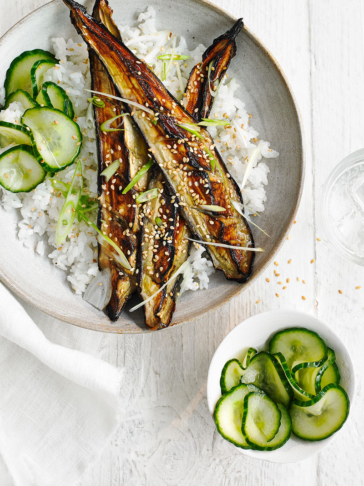

STICKY NOODLES WITH HOMEMADE HOISIN

- 2 small aubergines, halved
- vegetable oil, for roasting and frying
- 50g brown miso
- 100g giant couscous
- 1 red chilli, thinly sliced
- ½ small pack coriander, leaves chopped
- Heat oven to 180C/160C fan/gas 4.
- With a sharp knife, criss-cross the flesh of the aubergines in a diagonal pattern, then place on a baking tray. Brush the flesh with 1 tbsp vegetable oil.
- Mix the miso with 25ml water to make a thick paste. Spread the paste over the aubergines, then cover the tray with foil and roast in the centre of the oven for 30 mins.
- Remove the foil and roast the aubergines for a further 15-20 mins, depending on their size, until tender.
- Meanwhile, bring a saucepan of salted water to the boil and heat ½ tbsp vegetable oil over a medium-high heat in a frying pan. Add the couscous to the frying pan, toast for 2 mins until golden brown, then tip into the pan of boiling water and cook for 8-10 mins until tender (or following pack instructions). Drain well.
- Serve the aubergines with the couscous, topped with the chilli and a scattering of coriander leaves.